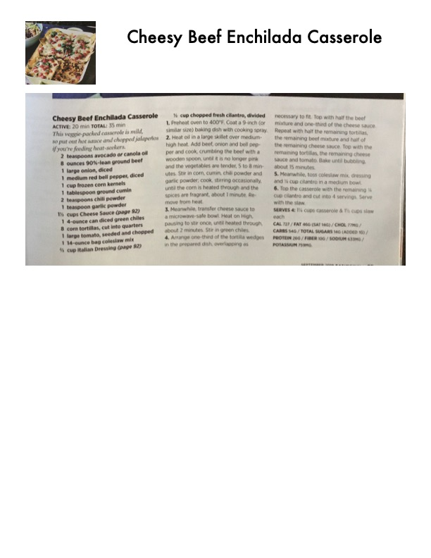

Cheesy Beef Enchilada Casserole

Original cookbook page 69
This veggie-packed casserole is mild, so put out hot sauce and chopped jalapeños if you're feeding heat-seekers.
Total: 35 min
Ingredients
- 2 teaspoons avocado or canola oil
- 8 ounces 90%-lean ground beef
- 1 large onion, diced
- 1 medium red bell pepper, diced
- 1 cup frozen corn kernels
- 1 tablespoon ground cumin
- 2 teaspoons chili powder
- 1 teaspoon garlic powder
- 1½ cups Cheese Sauce (page 82)
- 1 4-ounce can diced green chiles
- 8 corn tortillas, cut into quarters
- 1 large tomato, seeded and chopped
- 1 14-ounce bag coleslaw mix
- ⅓ cup Italian Dressing (page 82)
- ¼ cup chopped fresh cilantro, divided
Instructions
- Preheat oven to 400°F. Coat a 9-inch (or similar size) baking dish with cooking spray.
- Heat oil in a large skillet over medium-high heat. Add beef, onion and bell pepper and cook, crumbling the beef with a wooden spoon, until it is no longer pink and the vegetables are tender, 5 to 8 minutes. Stir in corn, cumin, chili powder and garlic powder; cook, stirring occasionally, until the corn is heated through and the spices are fragrant, about 1 minute. Remove from heat.
- Meanwhile, transfer cheese sauce to a microwave-safe bowl. Heat on High, pausing to stir, until heated through, about 2 minutes. Stir in green chiles.
- Arrange one-third of the tortilla wedges in the prepared dish, overlapping as necessary to fit. Top with half the beef mixture and one-third of the cheese sauce. Repeat with half the remaining tortillas, the remaining beef mixture and half of the remaining cheese sauce. Top with the remaining tortillas, the remaining cheese sauce and tomato. Bake until bubbling, about 15 minutes.
- Meanwhile, toss coleslaw mix, dressing and ⅛ cup cilantro in a medium bowl.
- Top the casserole with the remaining ⅛ cup cilantro and cut into 4 servings. Serve with the slaw.
Recipe #69 from collection